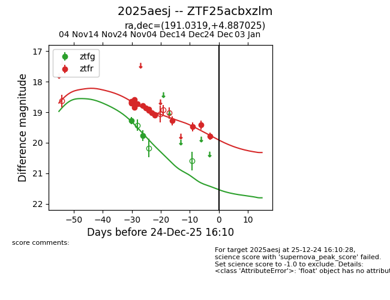
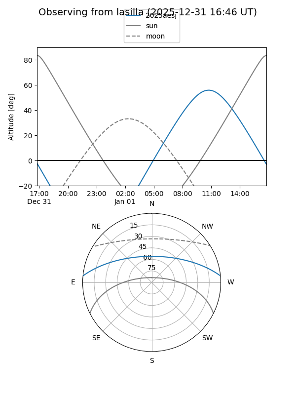
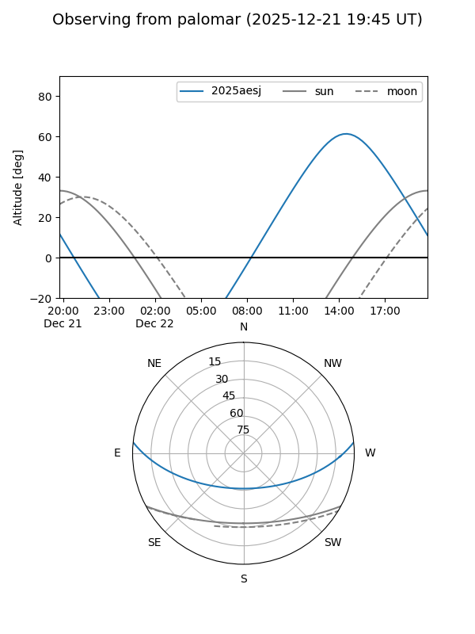
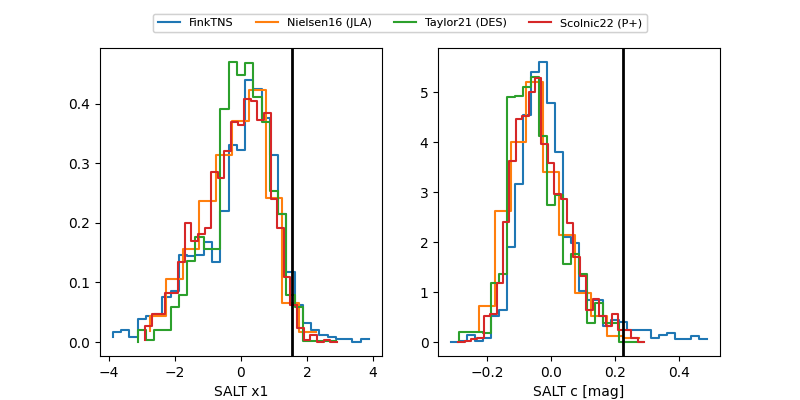

2025aesj
Target 2025aesj at 2025-12-31 18:00
Aliases and brokers:
FINK: link
Lasair: link
ALeRCE: link
TNS: link
YSE: link
alt names
ZTF25acbxzlm (ztf,fink_ztf)
2025aesj (tns,yse)
Coordinates:
equatorial (ra, dec) = 191.0319,+4.88703
equatorial (HMS+DMS) = 12:44:07.66,+04:53:13.29
galactic (l, b) = (298.1303,+67.69059)
Flags:
Photometry:
last ztfg=19.76, ztfr=19.79
2 ztfg, 17 ztfr detections
Lightcurve

Visibility


Additional plots
